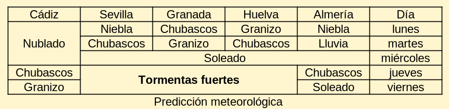

Debe recrear después de la Figura 1 una tabla HTML dónde lo importante es el significado o semántica de los datos, no la presentación.
Figura 1: figura con la tabla a codificar debajo
| Cadiz | Sevilla | Granada | Huelva | Almería | Día |
|---|---|---|---|---|---|
| Nublado | Niebla | Chubascos | Granizo | Niebla | Lunes |
| Chubascos | Granizo | Chubascos | Lluvia | Martes | |
| Soleado | Miercoles | ||||
| Chubascos | Tormentas fuertes | Chubascos | Jueves | ||
| Granizo | Soleado | Viernes | |||